This package contains basic mathematical operations, such as summation and multiplication, and basic mathematical functions, such as sqrt and sin, as input/output blocks. All blocks of this library can be either connected with continuous blocks or with sampled-data blocks.
Extends from Modelica.Icons.Package (Icon for standard packages).
| Name | Description |
|---|---|
| Conversion blocks to convert between SI and non-SI unit signals | |
| InverseBlockConstraints | Construct inverse model by requiring that two inputs and two outputs are identical (replaces the previously, unbalanced, TwoInputs and TwoOutputs blocks) |
| Gain | Output the product of a gain value with the input signal |
| 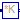 MatrixGain | Output the product of a gain matrix with the input signal vector |
| 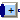 MultiSum | Sum of Reals: y = k[1]*u[1] + k[2]*u[2] + ... + k[n]*u[n] |
| MultiProduct | Product of Reals: y = u[1]*u[2]* ... *u[n] |
| MultiSwitch | Set Real expression that is associated with the first active input signal |
| 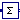 Sum | Output the sum of the elements of the input vector |
| Feedback | Output difference between commanded and feedback input |
| Add | Output the sum of the two inputs (this is an obsolet block. Use instead MultiSum) |
| 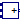 Add3 | Output the sum of the three inputs (this is an obsolet block. Use instead MultiSum) |
| Output product of the two inputs (this is an obsolet block. Use instead MultiProduct) | |
| Division | Output first input divided by second input |
| Abs | Output the absolute value of the input |
| 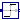 Sign | Output the sign of the input |
| 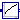 Sqrt | Output the square root of the input (input >= 0 required) |
| Sin | Output the sine of the input |
| Cos | Output the cosine of the input |
| 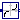 Tan | Output the tangent of the input |
| 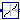 Asin | Output the arc sine of the input |
| 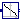 Acos | Output the arc cosine of the input |
| 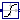 Atan | Output the arc tangent of the input |
| Atan2 | Output atan(u1/u2) of the inputs u1 and u2 |
| 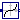 Sinh | Output the hyperbolic sine of the input |
| Cosh | Output the hyperbolic cosine of the input |
| 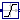 Tanh | Output the hyperbolic tangent of the input |
| Exp | Output the exponential (base e) of the input |
| Log | Output the natural (base e) logarithm of the input (input > 0 required) |
| 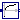 Log10 | Output the base 10 logarithm of the input (input > 0 required) |
| RealToInteger | Convert Real to Integer signal |
| 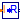 IntegerToReal | Convert integer to real signals |
| 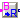 BooleanToReal | Convert Boolean to Real signal |
| 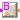 BooleanToInteger | Convert Boolean to Integer signal |
| 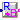 RealToBoolean | Convert Real to Boolean signal |
| IntegerToBoolean | Convert Integer to Boolean signal |
| Convert rectangular coordinates to polar coordinates | |
| Convert polar coordinates to rectangular coordinates | |
| Calculate mean over period 1/f | |
| Calculate refctified mean over period 1/f | |
| Calculate root mean square over period 1/f | |
| Harmonic | Calculate harmonic over period 1/f |
| Pass through the largest signal | |
| Pass through the smallest signal | |
| Indicates rising edge of boolean signal | |
| Indicates boolean signal changing | |
| Indicates integer signal changing |
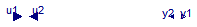
Exchange input and ouput signals of a block, i.e., the previous block inputs become block outputs and the previous block outputs become block inputs. This block is used to construct inverse models. Its usage is demonstrated in example: Modelica.Blocks.Examples.InverseModel.
Note, if a block shall be inverted that has several input and output blocks, then this can be easily achieved by using a vector of InverseBlockConstraints instances:
InverseBlockConstraint invert[3]; // Block to be inverted has 3 input signals
| Type | Name | Description |
|---|---|---|
| input RealInput | u1 | Input signal 1 (u1 = u2) |
| input RealInput | u2 | Input signal 2 (u1 = u2) |
| output RealOutput | y1 | Output signal 1 (y1 = y2) |
| output RealOutput | y2 | Output signal 2 (y2 = y2) |
block InverseBlockConstraints "Construct inverse model by requiring that two inputs and two outputs are identical (replaces the previously, unbalanced, TwoInputs and TwoOutputs blocks)"Modelica.Blocks.Interfaces.RealInput u1 "Input signal 1 (u1 = u2)"; Modelica.Blocks.Interfaces.RealInput u2 "Input signal 2 (u1 = u2)"; Modelica.Blocks.Interfaces.RealOutput y1 "Output signal 1 (y1 = y2)"; Modelica.Blocks.Interfaces.RealOutput y2 "Output signal 2 (y2 = y2)"; equation u1 = u2; y1 = y2;end InverseBlockConstraints;
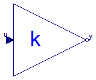
This block computes output y as product of gain k with the input u:
y = k * u;
| Type | Name | Default | Description |
|---|---|---|---|
| Real | k | Gain value multiplied with input signal [1] |
| Type | Name | Description |
|---|---|---|
| input RealInput | u | Input signal connector |
| output RealOutput | y | Output signal connector |
block Gain "Output the product of a gain value with the input signal" parameter Real k(start=1, unit="1") "Gain value multiplied with input signal";public Interfaces.RealInput u "Input signal connector"; Interfaces.RealOutput y "Output signal connector"; equation y = k*u;end Gain;
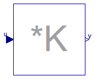
This blocks computes output vector y as product of the gain matrix K with the input signal vector u:
y = K * u;
Example:
parameter: K = [0.12 2; 3 1.5]
results in the following equations:
| y[1] | | 0.12 2.00 | | u[1] |
| | = | | * | |
| y[2] | | 3.00 1.50 | | u[2] |
Extends from Interfaces.MIMO (Multiple Input Multiple Output continuous control block).
| Type | Name | Default | Description |
|---|---|---|---|
| Real | K[:, :] | [1, 0; 0, 1] | Gain matrix which is multiplied with the input |
| Integer | nin | size(K, 2) | Number of inputs |
| Integer | nout | size(K, 1) | Number of outputs |
| Type | Name | Description |
|---|---|---|
| input RealInput | u[nin] | Connector of Real input signals |
| output RealOutput | y[nout] | Connector of Real output signals |
block MatrixGain
"Output the product of a gain matrix with the input signal vector"
parameter Real K[:, :]=[1, 0; 0, 1]
"Gain matrix which is multiplied with the input";
extends Interfaces.MIMO(final nin=size(K, 2), final nout=size(K, 1));
equation
y = K*u;
end MatrixGain;

This blocks computes the scalar Real output "y" as sum of the elements of the Real input signal vector u:
y = k[1]*u[1] + k[2]*u[2] + ... k[N]*u[N];
The input connector is a vector of Real input signals. When a connection line is drawn, the dimension of the input vector is enlarged by one and the connection is automatically connected to this new free index (thanks to the connectorSizing annotation).
The usage is demonstrated, e.g., in example Modelica.Blocks.Examples.RealNetwork1.
If no connection to the input connector "u" is present, the output is set to zero: y=0.
Extends from Modelica.Blocks.Interfaces.PartialRealMISO (Partial block with a RealVectorInput and a RealOutput signal).
| Type | Name | Default | Description |
|---|---|---|---|
| Real | k[nu] | fill(1, nu) | Input gains |
| Advanced | |||
| Integer | significantDigits | 3 | Number of significant digits to be shown in dynamic diagram layer for y |
| Type | Name | Description |
|---|---|---|
| input RealVectorInput | u[nu] | |
| output RealOutput | y |
block MultiSum
"Sum of Reals: y = k[1]*u[1] + k[2]*u[2] + ... + k[n]*u[n]"
extends Modelica.Blocks.Interfaces.PartialRealMISO;
parameter Real k[nu] = fill(1,nu) "Input gains";
equation
if size(u,1) > 0 then
y = k*u;
else
y = 0;
end if;
end MultiSum;
This blocks computes the scalar Real output "y" as product of the elements of the Real input signal vector u:
y = u[1]*u[2]* ... *u[N];
The input connector is a vector of Real input signals. When a connection line is drawn, the dimension of the input vector is enlarged by one and the connection is automatically connected to this new free index (thanks to the connectorSizing annotation).
The usage is demonstrated, e.g., in example Modelica.Blocks.Examples.RealNetwork1.
If no connection to the input connector "u" is present, the output is set to zero: y=0.
Extends from Modelica.Blocks.Interfaces.PartialRealMISO (Partial block with a RealVectorInput and a RealOutput signal).
| Type | Name | Default | Description |
|---|---|---|---|
| Advanced | |||
| Integer | significantDigits | 3 | Number of significant digits to be shown in dynamic diagram layer for y |
| Type | Name | Description |
|---|---|---|
| input RealVectorInput | u[nu] | |
| output RealOutput | y |
block MultiProduct "Product of Reals: y = u[1]*u[2]* ... *u[n]"
extends Modelica.Blocks.Interfaces.PartialRealMISO;
equation
if size(u,1) > 0 then
y = product(u);
else
y = 0;
end if;
end MultiProduct;
This block has a vector of Boolean input signals u[nu] and a vector of (time varying) Real expressions expr[nu]. The output signal y is set to expr[i], if i is the first element in the input vector u that is true. If all input signals are false, y is set to parameter "y_default".
// Conceptual equation (not valid Modelica) i = 'first element of u[:] that is true'; y = if i==0 then y_default else expr[i];
The input connector is a vector of Boolean input signals. When a connection line is drawn, the dimension of the input vector is enlarged by one and the connection is automatically connected to this new free index (thanks to the connectorSizing annotation).
The usage is demonstrated, e.g., in example Modelica.Blocks.Examples.RealNetwork1.
| Type | Name | Default | Description |
|---|---|---|---|
| Real | expr[nu] | fill(0.0, nu) | y = if u[i] then expr[i] else y_default (time varying) |
| Real | y_default | 0.0 | Default value of output y if all u[i] = false |
| Advanced | |||
| Integer | precision | 3 | Number of significant digits to be shown in dynamic diagram layer for y |
| Type | Name | Description |
|---|---|---|
| input BooleanVectorInput | u[nu] | Set y = expr[i], if u[i] = true |
| output RealOutput | y | Output depending on expression |
block MultiSwitch
"Set Real expression that is associated with the first active input signal"
input Real expr[nu]=fill(0.0, nu)
"y = if u[i] then expr[i] else y_default (time varying)";
parameter Real y_default=0.0
"Default value of output y if all u[i] = false";
parameter Integer nu(min=0) = 0 "Number of input connections";
parameter Integer precision(min=0) = 3
"Number of significant digits to be shown in dynamic diagram layer for y";
Modelica.Blocks.Interfaces.BooleanVectorInput u[nu]
"Set y = expr[i], if u[i] = true";
Modelica.Blocks.Interfaces.RealOutput y(start=y_default,fixed=true)
"Output depending on expression";
protected
Integer firstActiveIndex;
initial equation
pre(u) = fill(false,nu);
equation
firstActiveIndex = Modelica.Math.BooleanVectors.firstTrueIndex(
u);
y = if firstActiveIndex == 0 then y_default else expr[firstActiveIndex];
end MultiSwitch;
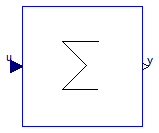
This blocks computes output y as sum of the elements of the input signal vector u:
y = u[1] + u[2] + ...;
Example:
parameter: nin = 3;
results in the following equations:
y = u[1] + u[2] + u[3];
Extends from Interfaces.MISO (Multiple Input Single Output continuous control block).
| Type | Name | Default | Description |
|---|---|---|---|
| Integer | nin | 1 | Number of inputs |
| Real | k[nin] | ones(nin) | Optional: sum coefficients |
| Type | Name | Description |
|---|---|---|
| input RealInput | u[nin] | Connector of Real input signals |
| output RealOutput | y | Connector of Real output signal |
block Sum "Output the sum of the elements of the input vector" extends Interfaces.MISO; parameter Real k[nin]=ones(nin) "Optional: sum coefficients"; equation y = k*u;end Sum;
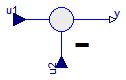
This blocks computes output y as difference of the commanded input u1 and the feedback input u2:
y = u1 - u2;
Example:
parameter: n = 2
results in the following equations:
y = u1 - u2
| Type | Name | Description |
|---|---|---|
| input RealInput | u1 | |
| input RealInput | u2 | |
| output RealOutput | y |
block Feedback "Output difference between commanded and feedback input"input Interfaces.RealInput u1; input Interfaces.RealInput u2; output Interfaces.RealOutput y; equation y = u1 - u2;end Feedback;
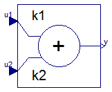
This blocks computes output y as sum of the two input signals u1 and u2:
y = k1*u1 + k2*u2;
Example:
parameter: k1= +2, k2= -3
results in the following equations:
y = 2 * u1 - 3 * u2
Extends from Interfaces.SI2SO (2 Single Input / 1 Single Output continuous control block).
| Type | Name | Default | Description |
|---|---|---|---|
| Real | k1 | +1 | Gain of upper input |
| Real | k2 | +1 | Gain of lower input |
| Type | Name | Description |
|---|---|---|
| input RealInput | u1 | Connector of Real input signal 1 |
| input RealInput | u2 | Connector of Real input signal 2 |
| output RealOutput | y | Connector of Real output signal |
block Add "Output the sum of the two inputs (this is an obsolet block. Use instead MultiSum)" extends Interfaces.SI2SO; parameter Real k1=+1 "Gain of upper input"; parameter Real k2=+1 "Gain of lower input"; equation y = k1*u1 + k2*u2;end Add;
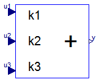
This blocks computes output y as sum of the three input signals u1, u2 and u3:
y = k1*u1 + k2*u2 + k3*u3;
Example:
parameter: k1= +2, k2= -3, k3=1;
results in the following equations:
y = 2 * u1 - 3 * u2 + u3;
Extends from Interfaces.BlockIcon (Basic graphical layout of input/output block).
| Type | Name | Default | Description |
|---|---|---|---|
| Real | k1 | +1 | Gain of upper input |
| Real | k2 | +1 | Gain of middle input |
| Real | k3 | +1 | Gain of lower input |
| Type | Name | Description |
|---|---|---|
| input RealInput | u1 | Connector 1 of Real input signals |
| input RealInput | u2 | Connector 2 of Real input signals |
| input RealInput | u3 | Connector 3 of Real input signals |
| output RealOutput | y | Connector of Real output signals |
block Add3 "Output the sum of the three inputs (this is an obsolet block. Use instead MultiSum)" extends Interfaces.BlockIcon; parameter Real k1=+1 "Gain of upper input"; parameter Real k2=+1 "Gain of middle input"; parameter Real k3=+1 "Gain of lower input";input Interfaces.RealInput u1 "Connector 1 of Real input signals"; input Interfaces.RealInput u2 "Connector 2 of Real input signals"; input Interfaces.RealInput u3 "Connector 3 of Real input signals"; output Interfaces.RealOutput y "Connector of Real output signals"; equation y = k1*u1 + k2*u2 + k3*u3;end Add3;
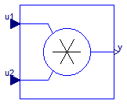
This blocks computes the output y (element-wise) as product of the corresponding elements of the two inputs u1 and u2:
y = u1 * u2;
Extends from Interfaces.SI2SO (2 Single Input / 1 Single Output continuous control block).
| Type | Name | Description |
|---|---|---|
| input RealInput | u1 | Connector of Real input signal 1 |
| input RealInput | u2 | Connector of Real input signal 2 |
| output RealOutput | y | Connector of Real output signal |
block Product "Output product of the two inputs (this is an obsolet block. Use instead MultiProduct)" extends Interfaces.SI2SO; equation y = u1*u2;end Product;
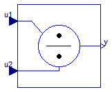
This block computes the output y (element-wise) by dividing the corresponding elements of the two inputs u1 and u2:
y = u1 / u2;
Extends from Interfaces.SI2SO (2 Single Input / 1 Single Output continuous control block).
| Type | Name | Description |
|---|---|---|
| input RealInput | u1 | Connector of Real input signal 1 |
| input RealInput | u2 | Connector of Real input signal 2 |
| output RealOutput | y | Connector of Real output signal |
block Division "Output first input divided by second input" extends Interfaces.SI2SO; equation y = u1/u2;end Division;
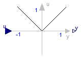
This blocks computes the output y as absolute value of the input u:
y = abs( u );
Extends from Interfaces.SISO (Single Input Single Output continuous control block).
| Type | Name | Description |
|---|---|---|
| input RealInput | u | Connector of Real input signal |
| output RealOutput | y | Connector of Real output signal |
block Abs "Output the absolute value of the input" extends Interfaces.SISO; equation y = abs(u);end Abs;
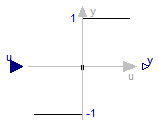
This blocks computes the output y as sign of the input u:
1 if u > 0
y = 0 if u == 0
-1 if u < 0
Extends from Interfaces.SISO (Single Input Single Output continuous control block).
| Type | Name | Description |
|---|---|---|
| input RealInput | u | Connector of Real input signal |
| output RealOutput | y | Connector of Real output signal |
block Sign "Output the sign of the input" extends Interfaces.SISO; equation y = sign(u);end Sign;
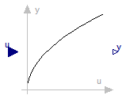
This blocks computes the output y as square root of the input u:
y = sqrt( u );
All elements of the input vector shall be zero or positive. Otherwise an error occurs.
Extends from Interfaces.SISO (Single Input Single Output continuous control block).
| Type | Name | Description |
|---|---|---|
| input RealInput | u | Connector of Real input signal |
| output RealOutput | y | Connector of Real output signal |
block Sqrt "Output the square root of the input (input >= 0 required)" extends Interfaces.SISO; equation y = sqrt(u);end Sqrt;
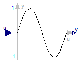
This blocks computes the output y as sine of the input u:
y = sin( u );

Extends from Interfaces.SISO (Single Input Single Output continuous control block).
| Type | Name | Description |
|---|---|---|
| input RealInput | u | Connector of Real input signal |
| output RealOutput | y | Connector of Real output signal |
block Sin "Output the sine of the input" extends Interfaces.SISO; equation y = Modelica.Math.sin(u);end Sin;
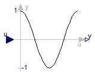
This blocks computes the output y as cos of the input u:
y = cos( u );

Extends from Interfaces.SISO (Single Input Single Output continuous control block).
| Type | Name | Description |
|---|---|---|
| input RealInput | u | Connector of Real input signal |
| output RealOutput | y | Connector of Real output signal |
block Cos "Output the cosine of the input" extends Interfaces.SISO; equation y = Modelica.Math.cos(u);end Cos;
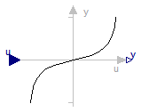
This blocks computes the output y as tan of the input u:
y = tan( u );

Extends from Interfaces.SISO (Single Input Single Output continuous control block).
| Type | Name | Description |
|---|---|---|
| input RealInput | u | Connector of Real input signal |
| output RealOutput | y | Connector of Real output signal |
block Tan "Output the tangent of the input" extends Interfaces.SISO; equation y = Modelica.Math.tan(u);end Tan;
This blocks computes the output y as the sine-inverse of the input u:
y = asin( u );
The absolute values of the elements of the input u need to be less or equal to one (abs( u ) <= 1). Otherwise an error occurs.

Extends from Interfaces.SISO (Single Input Single Output continuous control block).
| Type | Name | Description |
|---|---|---|
| input RealInput | u | Connector of Real input signal |
| output RealOutput | y | Connector of Real output signal |
block Asin "Output the arc sine of the input" extends Interfaces.SISO; equation y = Modelica.Math.asin(u);end Asin;
 Modelica.Blocks.Math.Acos
Modelica.Blocks.Math.Acos
This blocks computes the output y as the cosine-inverse of the input u:
y = acos( u );
The absolute values of the elements of the input u need to be less or equal to one (abs( u ) <= 1). Otherwise an error occurs.

Extends from Interfaces.SISO (Single Input Single Output continuous control block).
| Type | Name | Description |
|---|---|---|
| input RealInput | u | Connector of Real input signal |
| output RealOutput | y | Connector of Real output signal |
block Acos "Output the arc cosine of the input" extends Interfaces.SISO; equation y = Modelica.Math.acos(u);end Acos;
This blocks computes the output y as the tangent-inverse of the input u:
y= atan( u );

Extends from Interfaces.SISO (Single Input Single Output continuous control block).
| Type | Name | Description |
|---|---|---|
| input RealInput | u | Connector of Real input signal |
| output RealOutput | y | Connector of Real output signal |
block Atan "Output the arc tangent of the input" extends Interfaces.SISO; equation y = Modelica.Math.atan(u);end Atan;
This blocks computes the output y as the tangent-inverse of the input u1 divided by input u2:
y = atan2( u1, u2 );
u1 and u2 shall not be zero at the same time instant. Atan2 uses the sign of u1 and u2 in order to construct the solution in the range -180 deg ≤ y ≤ 180 deg, whereas block Atan gives a solution in the range -90 deg ≤ y ≤ 90 deg.

Extends from Interfaces.SI2SO (2 Single Input / 1 Single Output continuous control block).
| Type | Name | Description |
|---|---|---|
| input RealInput | u1 | Connector of Real input signal 1 |
| input RealInput | u2 | Connector of Real input signal 2 |
| output RealOutput | y | Connector of Real output signal |
block Atan2 "Output atan(u1/u2) of the inputs u1 and u2" extends Interfaces.SI2SO; equation y = Modelica.Math.atan2(u1, u2);end Atan2;
This blocks computes the output y as the hyperbolic sine of the input u:
y = sinh( u );

Extends from Interfaces.SISO (Single Input Single Output continuous control block).
| Type | Name | Description |
|---|---|---|
| input RealInput | u | Connector of Real input signal |
| output RealOutput | y | Connector of Real output signal |
block Sinh "Output the hyperbolic sine of the input" extends Interfaces.SISO; equation y = Modelica.Math.sinh(u);end Sinh;
This blocks computes the output y as the hyperbolic cosine of the input u:
y = cosh( u );

Extends from Interfaces.SISO (Single Input Single Output continuous control block).
| Type | Name | Description |
|---|---|---|
| input RealInput | u | Connector of Real input signal |
| output RealOutput | y | Connector of Real output signal |
block Cosh "Output the hyperbolic cosine of the input" extends Interfaces.SISO; equation y = Modelica.Math.cosh(u);end Cosh;
This blocks computes the output y as the hyperbolic tangent of the input u:
y = tanh( u );

Extends from Interfaces.SISO (Single Input Single Output continuous control block).
| Type | Name | Description |
|---|---|---|
| input RealInput | u | Connector of Real input signal |
| output RealOutput | y | Connector of Real output signal |
block Tanh "Output the hyperbolic tangent of the input" extends Interfaces.SISO; equation y = Modelica.Math.tanh(u);end Tanh;
This blocks computes the output y as the exponential (of base e) of the input u:
y = exp( u );

Extends from Interfaces.SISO (Single Input Single Output continuous control block).
| Type | Name | Description |
|---|---|---|
| input RealInput | u | Connector of Real input signal |
| output RealOutput | y | Connector of Real output signal |
block Exp "Output the exponential (base e) of the input" extends Interfaces.SISO; equation y = Modelica.Math.exp(u);end Exp;
This blocks computes the output y as the natural (base e) logarithm of the input u:
y = log( u );
An error occurs if the elements of the input u are zero or negative.

Extends from Interfaces.SISO (Single Input Single Output continuous control block).
| Type | Name | Description |
|---|---|---|
| input RealInput | u | Connector of Real input signal |
| output RealOutput | y | Connector of Real output signal |
block Log "Output the natural (base e) logarithm of the input (input > 0 required)" extends Interfaces.SISO; equation y = Modelica.Math.log(u);end Log;
This blocks computes the output y as the base 10 logarithm of the input u:
y = log10( u );
An error occurs if the elements of the input u are zero or negative.

Extends from Interfaces.SISO (Single Input Single Output continuous control block).
| Type | Name | Description |
|---|---|---|
| input RealInput | u | Connector of Real input signal |
| output RealOutput | y | Connector of Real output signal |
block Log10 "Output the base 10 logarithm of the input (input > 0 required)" extends Interfaces.SISO; equation y = Modelica.Math.log10(u);end Log10;
This block computes the output y as nearest integer value of the input u:
y = integer( floor( u + 0.5 ) ) for u > 0;
y = integer( ceil ( u - 0.5 ) ) for u < 0;
Extends from Interfaces.IntegerBlockIcon (Basic graphical layout of Integer block).
| Type | Name | Description |
|---|---|---|
| input RealInput | u | Connector of Real input signal |
| output IntegerOutput | y | Connector of Integer output signal |
block RealToInteger "Convert Real to Integer signal" extends Interfaces.IntegerBlockIcon;public Interfaces.RealInput u "Connector of Real input signal"; Interfaces.IntegerOutput y "Connector of Integer output signal"; equation y = if (u > 0) then integer(floor(u + 0.5)) else integer(ceil( u - 0.5));end RealToInteger;
This block computes the output y as Real equivalent of the Integer input u:
y = u;
where u is of Integer and y of Real type.
Extends from Interfaces.BlockIcon (Basic graphical layout of input/output block).
| Type | Name | Description |
|---|---|---|
| input IntegerInput | u | Connector of Integer input signal |
| output RealOutput | y | Connector of Real output signal |
block IntegerToReal "Convert integer to real signals" extends Interfaces.BlockIcon;Interfaces.IntegerInput u "Connector of Integer input signal"; Interfaces.RealOutput y "Connector of Real output signal"; equation y = u;end IntegerToReal;
This block computes the output y as Real equivalent of the Boolean input u:
y = if u then realTrue else realFalse;
where u is of Boolean and y of Real type, and realTrue and realFalse are parameters.
Extends from Interfaces.partialBooleanSI (Partial block with 1 input Boolean signal).
| Type | Name | Default | Description |
|---|---|---|---|
| Real | realTrue | 1.0 | Output signal for true Boolean input |
| Real | realFalse | 0.0 | Output signal for false Boolean input |
| Type | Name | Description |
|---|---|---|
| input BooleanInput | u | Connector of Boolean input signal |
| output RealOutput | y | Connector of Real output signal |
block BooleanToReal "Convert Boolean to Real signal" extends Interfaces.partialBooleanSI; parameter Real realTrue=1.0 "Output signal for true Boolean input"; parameter Real realFalse=0.0 "Output signal for false Boolean input";Blocks.Interfaces.RealOutput y "Connector of Real output signal"; equation y = if u then realTrue else realFalse;end BooleanToReal;
This block computes the output y as Integer equivalent of the Boolean input u:
y = if u then integerTrue else integerFalse;
where u is of Boolean and y of Integer type, and integerTrue and integerFalse are parameters.
Extends from Interfaces.partialBooleanSI (Partial block with 1 input Boolean signal).
| Type | Name | Default | Description |
|---|---|---|---|
| Integer | integerTrue | 1 | Output signal for true Boolean input |
| Integer | integerFalse | 0 | Output signal for false Boolean input |
| Type | Name | Description |
|---|---|---|
| input BooleanInput | u | Connector of Boolean input signal |
| output IntegerOutput | y | Connector of Integer output signal |
block BooleanToInteger "Convert Boolean to Integer signal" extends Interfaces.partialBooleanSI; parameter Integer integerTrue=1 "Output signal for true Boolean input"; parameter Integer integerFalse=0 "Output signal for false Boolean input";Blocks.Interfaces.IntegerOutput y "Connector of Integer output signal"; equation y = if u then integerTrue else integerFalse;end BooleanToInteger;

This block computes the Boolean output y from the Real input u by the equation:
y = u ≥ threshold;
where threshold is a parameter.
Extends from Interfaces.partialBooleanSO (Partial block with 1 output Boolean signal).
| Type | Name | Default | Description |
|---|---|---|---|
| Real | threshold | 0.5 | Output signal y is true, if input u >= threshold |
| Type | Name | Description |
|---|---|---|
| input RealInput | u | Connector of Real input signal |
| output BooleanOutput | y | Connector of Boolean output signal |
block RealToBoolean "Convert Real to Boolean signal"Blocks.Interfaces.RealInput u "Connector of Real input signal"; extends Interfaces.partialBooleanSO; parameter Real threshold=0.5 "Output signal y is true, if input u >= threshold"; equation y = u >= threshold;end RealToBoolean;

This block computes the Boolean output y from the Integer input u by the equation:
y = u ≥ threshold;
where threshold is a parameter.
Extends from Interfaces.partialBooleanSO (Partial block with 1 output Boolean signal).
| Type | Name | Default | Description |
|---|---|---|---|
| Integer | threshold | 1 | Output signal y is true, if input u >= threshold |
| Type | Name | Description |
|---|---|---|
| input IntegerInput | u | Connector of Integer input signal |
| output BooleanOutput | y | Connector of Boolean output signal |
block IntegerToBoolean "Convert Integer to Boolean signal"Blocks.Interfaces.IntegerInput u "Connector of Integer input signal"; extends Interfaces.partialBooleanSO; parameter Integer threshold=1 "Output signal y is true, if input u >= threshold"; equation y = u >= threshold;end IntegerToBoolean;
The input values of this block are the rectangular components
u_re and u_im of a phasor in two dimensions.
This block calculates the length y_abs and
the angle y_arg of the polar representation of this phasor.
y_abs = abs(u_re + j*u_im) = sqrt( u_re2 + u_im2 ) y_arg = arg(u_re + j*u_im) = atan2(u_im, u_re)
Extends from Modelica.Blocks.Interfaces.BlockIcon (Basic graphical layout of input/output block).
| Type | Name | Description |
|---|---|---|
| input RealInput | u_re | Real part of rectangular representation |
| input RealInput | u_im | Imaginary part of rectangular representation |
| output RealOutput | y_abs | Length of polar representation |
| output RealOutput | y_arg | Angle of polar representation |
block RectangularToPolar "Convert rectangular coordinates to polar coordinates" extends Modelica.Blocks.Interfaces.BlockIcon;Modelica.Blocks.Interfaces.RealInput u_re "Real part of rectangular representation"; Modelica.Blocks.Interfaces.RealInput u_im "Imaginary part of rectangular representation"; Modelica.Blocks.Interfaces.RealOutput y_abs "Length of polar representation"; Modelica.Blocks.Interfaces.RealOutput y_arg "Angle of polar representation"; equation y_abs = sqrt(u_re*u_re + u_im*u_im); y_arg = Modelica.Math.atan2(u_im, u_re);end RectangularToPolar;
The input values of this block are the polar components uabs and uarg of a phasor.
This block calculates the components y_re and y_im of the rectangular representation of this phasor.
y_re = u_abs * cos( u_arg ) y_im = u_abs * sin( u_arg )
Extends from Modelica.Blocks.Interfaces.BlockIcon (Basic graphical layout of input/output block).
| Type | Name | Description |
|---|---|---|
| input RealInput | u_abs | Length of polar representation |
| input RealInput | u_arg | Angle of polar representation |
| output RealOutput | y_re | Real part of rectangular representation |
| output RealOutput | y_im | Imaginary part of rectangular representation |
block PolarToRectangular "Convert polar coordinates to rectangular coordinates" extends Modelica.Blocks.Interfaces.BlockIcon;Modelica.Blocks.Interfaces.RealInput u_abs "Length of polar representation"; Modelica.Blocks.Interfaces.RealInput u_arg "Angle of polar representation"; Modelica.Blocks.Interfaces.RealOutput y_re "Real part of rectangular representation"; Modelica.Blocks.Interfaces.RealOutput y_im "Imaginary part of rectangular representation"; equation y_re = u_abs * Modelica.Math.cos(u_arg); y_im = u_abs * Modelica.Math.sin(u_arg);end PolarToRectangular;

This block calculates the mean of the input signal u over the given period 1/f:
1 T - ∫ u(t) dt T 0
Note: The output is updated after each period defined by 1/f.
Extends from Modelica.Blocks.Interfaces.SISO (Single Input Single Output continuous control block).
| Type | Name | Default | Description |
|---|---|---|---|
| Frequency | f | Base frequency [Hz] |
| Type | Name | Description |
|---|---|---|
| input RealInput | u | Connector of Real input signal |
| output RealOutput | y | Connector of Real output signal |
block Mean "Calculate mean over period 1/f"
extends Modelica.Blocks.Interfaces.SISO;
parameter Modelica.SIunits.Frequency f(start=50) "Base frequency";
protected
discrete Modelica.SIunits.Time t0 "Start time of simulation";
Real x(start=0) "Integrator state";
equation
when initial() then
t0 = time;
end when;
der(x) = u;
when sample(t0+1/f, 1/f) then
y=f*x;
reinit(x, 0);
end when;
end Mean;
This block calculates the rectified mean of the input signal u over the given period 1/f, using the mean block.
Note: The output is updated after each period defined by 1/f.
Extends from Modelica.Blocks.Interfaces.SISO (Single Input Single Output continuous control block).
| Type | Name | Default | Description |
|---|---|---|---|
| Frequency | f | Base frequency [Hz] |
| Type | Name | Description |
|---|---|---|
| input RealInput | u | Connector of Real input signal |
| output RealOutput | y | Connector of Real output signal |
block RectifiedMean "Calculate refctified mean over period 1/f" extends Modelica.Blocks.Interfaces.SISO; parameter Modelica.SIunits.Frequency f(start=50) "Base frequency";Mean mean(final f=f); Blocks.Math.Abs abs1; equationconnect(u, abs1.u); connect(abs1.y, mean.u); connect(mean.y, y); end RectifiedMean;
This block calculates the root mean square of the input signal u over the given period 1/f, using the mean block.
Note: The output is updated after each period defined by 1/f.
Extends from Modelica.Blocks.Interfaces.SISO (Single Input Single Output continuous control block).
| Type | Name | Default | Description |
|---|---|---|---|
| Frequency | f | Base frequency [Hz] |
| Type | Name | Description |
|---|---|---|
| input RealInput | u | Connector of Real input signal |
| output RealOutput | y | Connector of Real output signal |
block RootMeanSquare "Calculate root mean square over period 1/f" extends Modelica.Blocks.Interfaces.SISO; parameter Modelica.SIunits.Frequency f(start=50) "Base frequency";Blocks.Math.Product product; Mean mean(final f=f); Blocks.Math.Sqrt sqrt1; equationconnect(u, product.u1); connect(u, product.u2); connect(product.y, mean.u); connect(mean.y, sqrt1.u); connect(sqrt1.y, y); end RootMeanSquare;
This block calculates the root mean square and the phase angle of a single harmonic k of the input signal u over the given period 1/f, using the mean block.
Note: The output is updated after each period defined by 1/f.
Note: The harmonic is defined by √2 rms cos(k 2 π f t - arg)
Extends from Modelica.Blocks.Interfaces.BlockIcon (Basic graphical layout of input/output block).
| Type | Name | Default | Description |
|---|---|---|---|
| Frequency | f | Base frequency [Hz] | |
| Integer | k | Order of harmonic |
| Type | Name | Description |
|---|---|---|
| input RealInput | u | |
| output RealOutput | y_rms | Root mean square of polar representation |
| output RealOutput | y_arg | Angle of polar representation |
block Harmonic "Calculate harmonic over period 1/f" extends Modelica.Blocks.Interfaces.BlockIcon; parameter Modelica.SIunits.Frequency f(start=50) "Base frequency"; parameter Integer k(start=1) "Order of harmonic";Blocks.Sources.Sine sin1( final amplitude=sqrt(2), final phase=Modelica.Constants.pi/2, final freqHz=k*f); Blocks.Sources.Sine sin2( final amplitude=sqrt(2), final phase=0, final freqHz=k*f); Blocks.Math.Product product1; Blocks.Math.Product product2; Mean mean1(final f=f); Mean mean2(final f=f); Blocks.Interfaces.RealInput u; Blocks.Interfaces.RealOutput y_rms "Root mean square of polar representation"; Blocks.Interfaces.RealOutput y_arg "Angle of polar representation"; Blocks.Math.RectangularToPolar rectangularToPolar; equationconnect(sin2.y, product2.u2); connect(sin1.y, product1.u1); connect(u, product1.u2); connect(u, product2.u1); connect(product2.y, mean2.u); connect(product1.y, mean1.u); connect(mean1.y, rectangularToPolar.u_re); connect(mean2.y, rectangularToPolar.u_im); connect(rectangularToPolar.y_abs, y_rms); connect(rectangularToPolar.y_arg, y_arg); end Harmonic;

This block computes the output y as maximum of the two Real inputs u1 and u2:
y = max ( u1 , u2 );
Extends from Interfaces.SI2SO (2 Single Input / 1 Single Output continuous control block).
| Type | Name | Description |
|---|---|---|
| input RealInput | u1 | Connector of Real input signal 1 |
| input RealInput | u2 | Connector of Real input signal 2 |
| output RealOutput | y | Connector of Real output signal |
block Max "Pass through the largest signal" extends Interfaces.SI2SO; equation y = max(u1, u2);end Max;
This block computes the output y as minimum of the two Real inputs u1 and u2:
y = min ( u1 , u2 );
Extends from Interfaces.SI2SO (2 Single Input / 1 Single Output continuous control block).
| Type | Name | Description |
|---|---|---|
| input RealInput | u1 | Connector of Real input signal 1 |
| input RealInput | u2 | Connector of Real input signal 2 |
| output RealOutput | y | Connector of Real output signal |
block Min "Pass through the smallest signal" extends Interfaces.SI2SO; equation y = min(u1, u2);end Min;

This block sets the Boolean output y to true, when the Boolean input u shows a rising edge:
y = edge( u );
Extends from Interfaces.BooleanSISO (Single Input Single Output control block with signals of type Boolean).
| Type | Name | Description |
|---|---|---|
| input BooleanInput | u | Connector of Boolean input signal |
| output BooleanOutput | y | Connector of Boolean output signal |
block Edge "Indicates rising edge of boolean signal" extends Interfaces.BooleanSISO; equation y = edge(u);end Edge;
This block sets the Boolean output y to true, when the Boolean input u shows a rising or falling edge, i.e., when the signal changes:
y = change( u );
Extends from Interfaces.BooleanSISO (Single Input Single Output control block with signals of type Boolean).
| Type | Name | Description |
|---|---|---|
| input BooleanInput | u | Connector of Boolean input signal |
| output BooleanOutput | y | Connector of Boolean output signal |
block BooleanChange "Indicates boolean signal changing" extends Interfaces.BooleanSISO; equation y = change(u);end BooleanChange;

This block sets the Boolean output y to true, when the Integer input u changes:
y = change( u );
Extends from Interfaces.IntegerSIBooleanSO (Integer Input Boolean Output continuous control block).
| Type | Name | Description |
|---|---|---|
| input IntegerInput | u | Connector of Integer input signal |
| output BooleanOutput | y | Connector of Boolean output signal |
block IntegerChange "Indicates integer signal changing" extends Interfaces.IntegerSIBooleanSO; equation y = change(u);end IntegerChange;